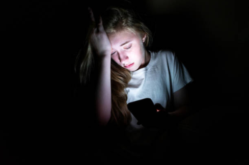

Quelques statistiques
Jonathan Haidt, psychologue social américain, a constaté une augmentation de l’anxiété et de la dépression chez les jeunes adolescents américains entre 2011 et 2013. Le nombre d’adolescents admis à l’hôpital pour s’être fait du mal a grimpé à partir de cette période. Les centres pour le contrôle et la prévention des maladies ont, en 2015, étudié le nombre de jeunes filles admises à l’hôpital pour s’être faites du mal volontairement. Cette analyse s’est basée sur une période de sept ans (de 2008 à 2015). Sur 100,000 adolescentes âgées de 15 à 19 ans, plus de 62% des jeunes filles qui ont été admises à l’hôpital. Ensuite, sur une période de 20 ans (1999-2019), un bond spectaculaire dans la courbe des suicides d’adolescentes a été recensé.
Sur 1 million de jeunes filles, les suicides d’adolescentes ont augmenté de 70% par rapport à la décennie précédente. Chez les pré-adolescentes, il y’a eu une hausse de 151% des suicides chez ces jeunes filles. Les médecins ont constaté cette hausse à partir de 2009. En effet, cette année a été capitale dans l’histoire des réseaux sociaux car ils sont devenus disponibles sur les téléphones, leur popularité est ainsi montée en flèche. De plus, en août 2020, depuis le confinement, une hausse des suicides a été constatée chez les jeunes filles japonaises. Une des écoutantes de l’association tokyoïte de prévention du suicide a un avis très arrêté sur cette hausse de suicide chez les jeunes adolescentes : « les adolescentes sont encore plus dépendantes des réseaux sociaux, qui sont un exutoire, un espace de confidences, mais où les réponses des autres peuvent être décevantes, violentes, diffamantes».
Les solutions proposées pour diminuer l’influence des réseaux sociaux sur les jeunes
Des expert sent des solutions nécessaires pour les jeunes. Ilaria Montagni, doctorante en sciences psychologiques et psychiatriques, évoque cette solution : « Les réseaux sociaux peuvent s’avérer dangereux pour ceux qui les pratiquent de manière excessive. Il faut donc limiter cette pratique qui peut devenir très vite une addiction. ». Pour les adolescents qui ont développés des troubles obsessionnels suite aux réseaux sociaux, plusieurs techniques peuvent être mises en place : thérapie individuelle/collective/cognitive, sophrologie etc. Pour Marie-Anne Sergerie, auteure du livre Cyberdépendance : Quand l’usage des technologies devient problématique, la responsabilisation des jeunes est nécessaire. « L’idée n’est pas de démoniser les technologies, mais de s’intéresser à ce que nos enfants font pour les aider à développer des comportements responsables ne serait-ce que comment échanger avec les autres en ligne, faire attention à ce qu’on publie… » dit-elle.
L’impact des réseaux sociaux sur les jeunes
Les réseaux sociaux sont aujourd’hui indispensables à chacun d’entre nous, leur place dans la société est prépondérante. Une émission commentée sur Twitter peut susciter le buzz, des groupes pro-conspiration sur Facebook peuvent se développer à l’échelle internationale, une nouvelle mode peut naître grâce à Instagram… Les réseaux sociaux ont cette capacité de fédérer, réunir et de créer une conversation sur le monde qui nous entoure. Mais ils peuvent tomber dans les mains des personnes les plus vulnérables, en l’occurrence les jeunes. Dépression, complexes, regard critique sur leurs corps, les réseaux sociaux peuvent être source de mal-être pour eux. Nous allons voir dans cet article comment les réseaux sociaux ont conquis le cœur des jeunes pour le meilleur…et pour le pire.
Les effets néfastes des réseaux sociaux sur les jeunes
Le désir d’un physique parfait
Les conséquences désastreuses des réseaux sociaux touchent le plus souvent les jeunes filles. Effectivement, notamment sur les réseaux sociaux, se trouve un culte du corps parfait, un diktat de la beauté. La société, à travers les réseaux sociaux, présente un modèle-type de femme : peau bronzée, taille marquée, hanches développées. Tous ces éléments rendent ce modèle de beauté inatteignable. A cause de tous ces éléments, la jeune fille pratique une comparaison avec les célébrités pouvant entraîner une perte d’estime de soi. Ce regard sévère sur le corps est accentué par les placements de produit des influenceurs pour vendre des pilules amincissantes (avec code promo en cadeau) ou autres systèmes miracles pour correspondre aux critères de beauté. La plupart des femmes que ces jeunes filles idéalisent ont pris leur photo sous une bonne lumière, avec une posture qui avantage leur corps et ont très certainement retouché leur visage ou certaines parties de leurs corps. Ensuite, elles ne savent pas que les personnalités d’Instagram ont utilisé du botox, fait des liposuccions, mis des implants pour avoir le corps qu’elles ont aujourd’hui.
Des enfants vulnérables Le cyberharcèlement est un des effets néfastes sur les plus jeunes. En 2012, selon une enquête d’EU Kids Online, en France, les filles sont trois fois plus nombreuses que les garçons à déclarer être cyberharcelées sur Internet. De plus, selon une étude de Catherine Blaya, les garçons sont principalement les auteurs d’images et de vidéos humiliantes envers les filles. Selon Karyn Healy, psychologue à l’Université de Queensland, le harcèlement peut se prolonger sur les réseaux sociaux. « Oui, les médias sociaux peuvent causer des dommages. Un accès sans entrave peut exposer les jeunes au cyberharcèlement. Ils peuvent aussi se retrouver face à des contenus inappropriés dont la consultation peut avoir des conséquences dévastatrices. », dit-elle. Ensuite, les réseaux sociaux peuvent provoquer des enfants dépressifs. Cette dépression peut être liée au manque de “j’aime”, d’attention et d’amour sur les réseaux sociaux.
Conclusion
Comme nous avons pu le voir, les réseaux sociaux peuvent impacter temporairement ou durablement les jeunes. Si le jeune n’est pas protégé, est exposé aux mauvaises personnes et à un contenu sensible, non approprié à son âge, il y a un grand risque qu’il soit danger. Toutefois, les réseaux sociaux ne sont pas que négatifs. La continuité du lien social sur les réseaux après les moments à l’école renforce les amitiés, qui peuvent être un soutien face aux difficultés de l’adolescence. De plus, l’adolescent se sent entouré par ses amis, avec qui il peut partager les moments forts qu’il a vécu. Selon la société canadienne de physiologie de l’exercice, les enfants de moins de 2 ans ne doivent pas être exposés aux écrans. Ensuite pour les enfants de 2 à 5 ans, on recommande moins d’une heure par jour. Puis, pour les 5-17 ans, moins de 2 heures par jour sont requis pour cette tranche d’âge. Mais est-ce-que les parents respectent vraiment toutes ces consignes à la lettre ? Est-il trop tard pour changer les choses ? Seules les prochaines années nous le diront.